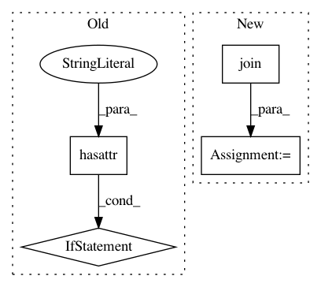

930e8bdb5a05d21f6b09623c5b4dade19d1efa76,tensorflow_transform/beam/impl.py,,_infer_metadata_from_saved_model_v2,#Any#,802
Before Change
// tf.function, Since `input_signature` was specified when exporting the tf
// function to `SavedModel`, there should be exactly one concrete function
// present on loading the `SavedModel`.
if hasattr(imported.transform_fn, "concrete_functions"):
assert len(imported.transform_fn.concrete_functions) == 1
assert len(imported.metadata_fn.concrete_functions) == 1
concrete_transform_fn = imported.transform_fn.concrete_functions[0]
concrete_metadata_fn = imported.metadata_fn.concrete_functions[0]
else:
concrete_transform_fn = imported.transform_fn
concrete_metadata_fn = imported.metadata_fn
structured_outputs = tf.nest.pack_sequence_as(
structure=concrete_transform_fn.structured_outputs,
flat_sequence=concrete_transform_fn.outputs,
expand_composites=True)
After Change
saved_model_dir: str) -> dataset_metadata.DatasetMetadata:
Infers a DatasetMetadata for outputs of a TF2 SavedModel.
metadata_path = os.path.join(saved_model_dir,
impl_helper.METADATA_SAVED_MODEL_DIR_NAME)
concrete_metadata_fn = _get_concrete_fn(metadata_path, "metadata_fn")
concrete_transform_fn = _get_concrete_fn(saved_model_dir, "transform_fn")
structured_outputs = tf.nest.pack_sequence_as(
In pattern: SUPERPATTERN
Frequency: 3
Non-data size: 4
Instances
Project Name: tensorflow/transform
Commit Name: 930e8bdb5a05d21f6b09623c5b4dade19d1efa76
Time: 2021-01-25
Author: varshaan@google.com
File Name: tensorflow_transform/beam/impl.py
Class Name:
Method Name: _infer_metadata_from_saved_model_v2
Project Name: CellProfiler/CellProfiler
Commit Name: 2897fcf87291c5aa3d955e3c5e8cc7957313299b
Time: 2017-07-07
Author: allen.goodman@icloud.com
File Name: cellprofiler/icons/__init__.py
Class Name:
Method Name:
Project Name: neurosynth/neurosynth
Commit Name: 4867e69181cc65a39b317819825606e0ef9350b5
Time: 2015-01-08
Author: tyarkoni@gmail.com
File Name: neurosynth/analysis/cluster.py
Class Name: Clusterer
Method Name: _create_cluster_images